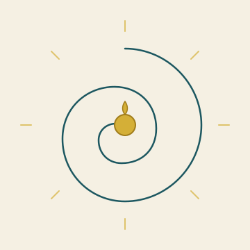

Het Open Vizier · Toekomst · Energie
Een krant over denken zonder oogkleppen

★ TOEKOMST · ENERGIE
Drie vragen onder één onderwerp: hoe energie wordt opgewekt en verdeeld, hoe de evolutie zou kunnen gaan, en hoe de architectuur er op Europese schaal uit zou moeten zien. Vijf artikelen verdeeld over die drie vragen.
★ I · HOE HET ZICH HEEFT ONTWIKKELD
Wat er nu al ligt aan techniek, en wat met de bestaande infrastructuur kan worden gedaan.
★ II · HOE DE EVOLUTIE ZOU GAAN
Een fundamenteel andere route — niet met magneetkooien, maar met stromingsleer als basis.
★ III · HOE HET ZOU MOETEN GAAN
Concrete uitvoering op regionale en Europese schaal — wat Brussel werkelijk krijgt.
Whitepaper Carbon-Alert R&D: het optimale systeem voor energieverwerking uit biomassa over 25, 50 en 100 jaar. Drie horizonten — 2050, 2075, 2125.
Brandenburg en Mecklenburg-Voor-Pommeren bouwen vandaag op circa 285.000 hectare winterkoolzaad. Met de Carbon-Alert-architectuur is een veelvoud aan opbrengst te behalen.
Carbon-Alert op Europese schaal: zes miljoen hectare koolzaad, twintig miljoen ton sojaschroot-import, en het volledige GLB-budget.
★ Bronnen-edities
De artikelen hieronder zijn afkomstig uit Editie 0 (Europa), Editie 1 (Samenhang) en de Editie Duitsland, waar zij in hun oorspronkelijke context staan.
★ Terug naar